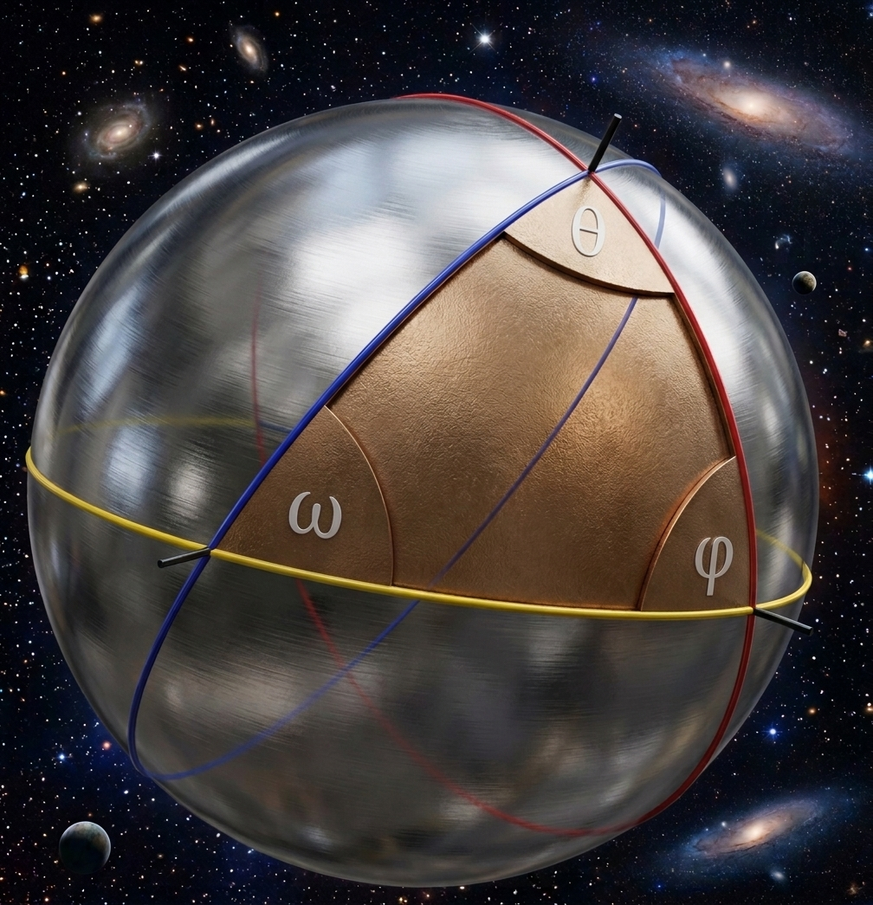

3D γωνίες
Μια προσπάθεια γενίκευσης της γωνίας στον χώρο (3D) και του αθροίσματος 3D-γωνιών των στερεών.
1. Εισαγωγή
1.1 Γενίκευση γωνίας
Γνωρίζουμε ήδη από τη σχολική μας Γεωμετρία ότι γωνία είναι η περιοχή μεταξύ δύο ημιευθειών με κοινή αρχή. Με την ίδια λογική μπορούμε να ορίσουμε στον χώρο 3D-γωνίες ως εξής:
- Παίρνουμε ένα σημείο $A$ στον χώρο.
- Παίρνουμε ένα σύνολο ημιευθειών που διέρχονται από το $A$ και σχηματίζουν επιφάνεια. Π.χ.:
- μια πυραμίδα χωρίς βάση,
- ένας κώνος χωρίς βάση,
- δύο τεμνόμενα επίπεδα,
- κ.τ.λ.
- Η 3D-γωνία είναι η περιοχή στο εσωτερικό (στο κυρτό τμήμα) της παραπάνω επιφάνειας.
Γνωρίζουμε, επίσης, ότι ένας τρόπος μέτρησης μιας γωνίας στο επίπεδο είναι εξισώνοντάς την με το τόξο του μοναδιαίου κύκλου, στο οποίο βαίνει ως επίκεντρη. Έτσι, αν η γωνία $\hat{A}$ ως επίκεντρη βαίνει σε τόξο μοναδιαίου κύκλου $\ell$, τότε λέμε ότι ισούται με $\ell\phantom{8}(\operatorname{rad})$.
Υπό αυτή την οπτική γωνία μπορούμε να μετρησουμε τις 3D-γωνίες εξισώνοντάς τες με την επιφάνεια της μοναδιαίας σφαίρας της οποίας είναι επίκεντρες. Έτσι, αν η 3D-γωνία $\hat{A}$ ως επίκεντρη βαίνει σε επιφάνεια μοναδιαίας σφαίρας $E$, τότε λέμε ότι ισούται με $E \phantom{8}(\operatorname{rad}^2)$.
1.2 Γωνίες στα στερεά
Εκ πρώτης όψεως οι γωνίες ενός πολυέδρου είναι οι γωνίες στις κορυφές του. Αν θυμιθούμε όμως τον ορισμό που δώσαμε για την 3D-γωνία, θα δούμε πως συμπεριλαμβάνει και τις 3D-γωίες στις ακμές του, όπως παρουσιάζεται στο παρακάτω σχήμα.
Στο σημείο αυτό θα πρέπει να ξεκαθαρίσουμε πως τόσο εννοιολογικά, όσο και αριθμητικά η 2D-γωνία δύο τεμνόμενων επιπέδων δεν ισούται με την 3D-γωνία τους. Αυτό γίνεται προφανές, αν για παράδειγμα πάρουμε δύο κάθετα επίπεδα. Η 2D-γωνία τους είναι προφανώς $\dfrac{\pi}{2}\phantom{8}(\operatorname{rad})$. Όμως, καθόσον η 3D-γωνία «τρώει» το $\frac{1}{4}$ της σφαίρας, η 3D-γωνία του θα είναι $\frac{1}{4}\cdot 4\pi=\pi \phantom{8} (\operatorname{rad}^2)$.
Και τώρα ήρθε η ώρα να δούμε κάποια πράγματα παραπάνω.
2. Άθροισμα γωνιών πολυέδρου
2.1 Άθροισμα γωνιών τετραέδρου
2.1.1 Πρώτη απόδειξη
Ας εστιάσουμε στην κορυφή $A$ του παρακάτω τετραέδρου.
Η 3D-γωνία με κορυφή το $A$ και επιφάνεια το οριζόντιο ροζ επίπεδο είναι ένα ημισφαίριο, ήτοι $2\pi \phantom{8} (\operatorname{rad}^2)$. Αυτό με τη σειρά του αποτελείται από τη 3D-γωνία της κορυφής $A$, κάποιες τρίεδρες 3D-γωνίες που λόγω ισομετρίας ισούνται με τις 3D-γωνίες των κάτω κορυφών και κάποιες τετράεδρες 3D-γωνίες.
Η κάθε τετράεδρη τέτοια 3D-γωνία ισούται με τη 3D-γωνία της αντίστοιχης ακμής μείον τη 3D-γωνία της κορυφής $A$ και μείον τη 3D-γωνία μιας από τις κάτω κορυφές. Έτσι, αν $κ$ μια τυχαία 3D-γωνία κορυφής και $α$ μια τυχαία 3D-γωνία ακμής, έχουμε:
Αθροίζοντας τις αντίστοιχες εξισώσεις με την \eqref{angA} και για τις τέσσερις 3D-γωνίες των κορυφών, έχουμε:
2.1.2 Δεύτερη απόδειξη
Μια εναλλακτική και ίσως απλούστερη απόδειξη είναι χρησιμοποιώντας τον τύπο για το εμβαδόν επιφάνειας του σφαιρικού τριγώνου:
Όπου $ω$, $φ$, $θ$ οι 2D-γωνίες του σφαιρικού τριγώνου (σε ακτίνια) και $r$ η ακτίνα της σφαίρας (βλ. και εικόνα 3).

Επανερχόμενοι στις σφαίρες του τετραέδρου μας έχουμε ότι, αν το $\mathcal{E}$ αντιπροσωπεύει την 3D-γωνία μιας κορυφής του, τότε τα $ω$, $φ$, $θ$ είναι οι 2D-γωνίες των εδρών που συντρέχουν στην κορυφή αυτή. Αθροίζοντας, λοιπόν, όλες τις 3D-γωνίες των κορυφών του τετραέδρου και ορίζοντας ως $μ$ τις 2D-γωνίες των εδρών έχουμε:
Δεδομένου ότι η 2D-γωνία δύο επιπέδων έχει το μισό μέτρο από την αντίστοιχη 3D-γωνία, έχουμε τελικά:
2.1.3 Συμπεράσματα
Εκ πρώτης όψεως το παραπάνω συμπέρασμα είναι το τρισδιάστατο ανάλογο του αθροίσματος γωνιών τριγώνου και απλά η αφαίρεση έχει προκύψει από τις «ανωμαλίες» που έχει η Σφαιρική Γεωμετρία. Στα μάτια του γράφοντος, όμως, μοιάζει περισσότερο με το άθροισμα των εξωτερικών γωνιών ενός πολυγώνου (τριγώνου ειδικότερα).
Αυτό για δύο λόγους:
- Αφενός λόγω της γεωμετρικής ερμηνείας της 3D-γωνίας $α-κ$, όπου πρακτικά είναι το κομμάτι της $κ$ που απομένει αν αφαιρέσουμε το $α$ και το οποίο είναι «έξω» από το τετράεδρο.
- Αφετέρου, αν κάνουμε τις ίδιες παραδοχές για τα πολύγωνα, θεωρώντας πως στα μέσα των πλευρών τους υπάρχει μία 2D-γωνία μέτρου $\pi\phantom{8}(\operatorname{rad})$, τότε το άθροισμα αυτών των ευθείών 2D-γωνιών (το αντίστοιχο του $\sum α$) μείον το άθροισμα των «παραδωσιακών» 2D-γωνιών του πολυγώνου δίνει το άθροισμα των εξωτερικών 2D-γωνιών του πολυγώνου.
Από αυτή την άποψη δεν είναι έκπληξη που το άθροισμα των εξωτερικών 2D-γωνιών ενός τριγώνου ισούται με το μήκος του κύκλου ($2\pi\phantom{8}(\operatorname{rad})$) και το άθροισμα $\sum α-\sum κ$ ισούται με την επιφάνεια μιας σφαίρας (($4\pi\phantom{8}(\operatorname{rad}^2)$)).
2.2 Άθροισμα γωνιών πυραμίδας
Έστω ότι έχουμε μια πυραμίδα με $n$-γωνη βάση. Παίρνουμε ένα σημείο $M$ στο εσωτερικό της βάσης της και ακολούθως σχηματίζουμε τατετράεδρα:
- με κορυφή την κορυφή της πυραμίδας μας,
- με μία ακμή μία από τις ακμές τις βάσης και
- άλλη κορυφή το $M$.
Αθροίζοντας τις 3D-γωνίες των ακμών των εν λόγω τετραέδρων σχηματίζονται:
- το άθροισμα των 3D-γωνιών των ακμών της πυραμίδας μας ($\sum a$),
- $n$ 3D-γωνίες από τις ακμές στο εσωτερικό της βάσης της πυραμίδας, οι οποίες έχουν μέτρο $2\pi \phantom{8} (\operatorname{rad}^2)$,
- μία 3D-γωνία από την ακμή που ενώνει την κορυφή της πυραμίδας με το $M$ και η οποία έχει μέτρο $4\pi \phantom{8} (\operatorname{rad}^2)$.
Αθροίζοντας τις 3D-γωνίες των κορυφών των εν λόγω τετραέδρων σχηματίζονται:
- το άθροισμα των 3D-γωνιών των κορυφών της πυραμίδας μας ($\sum κ$),
- μία 3D-γωνία στο σημείο $M$ και η οποία έχει μέτρο $2\pi \phantom{8}(\operatorname{rad}^2)$.
Επομένως:
2.3 Άθροισμα γωνιών κυρτού πολυέδρου
2.3.1 Απλό πολύεδρο
Εδώ θ' ασχοληθούμε με μια απλή περίπτωση πολυέδρων, αυτά που:
- οι έδρες τους αποτελούνται από $n$-γωνα (όχι απαραίτητα κανονικά ή όμοια μεταξύ τους),
- σε κάθε κορυφή του ενώνονται $m$ έδρες.
Αρχικά, για λόγους απλότητας ορίζουμε ως $p_n$ το $\sum α-\sum κ$ μιας πυραμίδας $n$-γωνης βάσης. Ακολούθως, σταμπάρουμε μια κορυφή $M$ του πολυέδρου και σχηματίζουμε πυραμίδες $n$-γωνης βάσης με κορυφή το $K$ και βάση τις έδρες του πολυέδρου. Αφού σε κάθε κορυφή συντρέχουν $m$ έδρες, θα έχουμε $E-m$ τέτοιες πυραμίδες, όπου $E$ το πλήθος των εδρών του πολυέδρου.
Αθροίζοντας τα $\sum α-\sum κ$ των πυραμίδων αυτών σχηματίζεται:
- το $\sum α-\sum κ$ του πολυέδρου μας,
- $n-3$ ακμές μέσα στην κάθε μία από τις $m$ έδρες της κορυφής $M$, οι οποίες τελικά σχηματίζουν 3D-γωνίες μέτρου $m(n-3)\cdot 2\pi$
- $K-\left(m+1+m(n-3)\right)$ ακμές στο εσωτερικό του πολυέδρου ($K$ το πλήθος των κορυφών του πολυέδρου) μέτρου $4\pi$ έκαστη, όπου αυτό δικαιολογείται από το ότι οι εν λόγω ακμές είναι όσες:
- οι $K$ κορυφές του πολυγώνου μείον,
- τη $1$ κορυφή $M$ μείον,
- τις $m$ κορυφές των εδρών που ακουμπανε στο $M$ μείον,
- τις $n-3$ κορυφές των διαγωνίων που είναι στο εσωτερικό κάθε μίας από τις $m$ έδρες με κορυφή $M$,
- καμία επιπλέον 3D-γωνία κορυφής να αφαιρεθεί.
Έτσι έχουμε:
Δεδομένου ότι κάθε ακμή ανήκει σε δύο έδρες κι ότι έχουμε $n$ ακμές σε κάθε έδρα, έχουμε συνολικά $A=\frac{nE}{2}$ ακμές. Επίσης, δεδομένου και οι κορυφές κάθε έδρας είναι $n$, αλλά σε κάθε κορυφή πέφτουν $m$ έδρες, έχουμε συνολικά $Κ=\frac{nE}{m}$ κορυφές. Λόγω του τύπου του Euler $Κ+Ε=Α+2$ έχουμε:
Συνδυάζοντας τις \eqref{angPolyedr1} και \eqref{euler} έχουμε για το πολύεδρο:
2.3.2 Τυχαίο πολύεδρο
Δεδομένου ότι μία πυραμίδα με $n$-γωνη βάση έχει $n+1$ έδρες, έχουμε ότι ο τύπος \eqref{angPolyedr} καλύπτει και την περίπτωση της πυραμίδας, καθόσον $2(n+1-2)\pi=2\pi n-2\pi$. Αυτό μάς κάνει να υποψιαζόμαστε ότι ο τύπος \eqref{angPolyedr} μπορεί να ισχύει για κάθε πολύεδρο.
Όντως! Ας πάρουμε ένα σημείο $M$ στο εσωτερικό του πολυέδρου κι ας σχηματίσουμε όλες τις πυραμίδες με κορυφή το $M$ και βάση τις έδρες του πολυέδρου. Αθροίζοντας τα $\sum α-\sum κ$ των πυραμίδων αυτών σχηματίζονται:
- οι $\sum α$ 3D-γωνίες του πολυέδρου,
- οι $\sum κ$ 3D-γωνίες του πολυέδρου,
- $K$ «ακτίνες» με αφετηρία το $Μ$, οι οποίες έχουν μέτρο $4\pi \phantom{8}(\operatorname{rad}^2$,
- μία «κεντρική 3D-γωνία» με κορυφή το $M$ μέτρου $4\pi \phantom{8}(\operatorname{rad}^2$.
Έτσι, αν όπως πρις ορίσουμε $p_n=2\pi n-2\pi$ το $\sum α-\sum κ$ μιας πυραμίδας με $n$-γωνη βάση, έχουμε για το πολύεδρο:
Καθόσον το άθροισμα των ακμών των βάσεων όλων αυτών των πυραμίδων σχηματίζει τις ακμές του πολυέδρου εις διπλούν, έχουμε:
Άρα μέσω της ταυτότητας του Euler ($Κ+Ε=Α+2$) έχουμε:
Διαπιστώνουμε, λοιπόν, πως ο τύπος $\sum α-\sum κ=2\pi (E-2)$ ισχύει για κάθε περίπτωση κυρτού πολυέδρου.